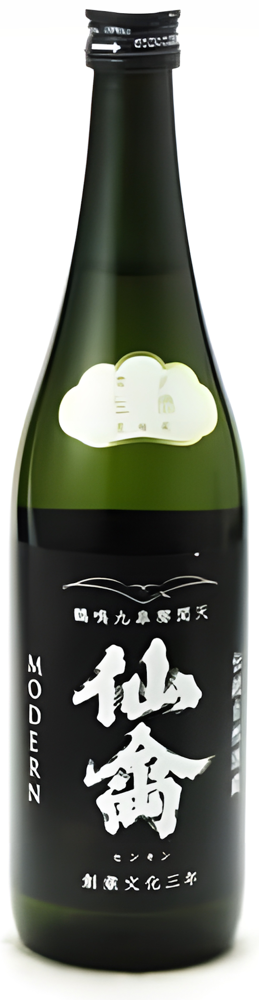

日本酒 — EDITOR'S PICK
2026年4月23日
クロフク編集長
栃木のドメーヌが生む
甘酸の美学
仙禽
こんにちは、クロフク編集長です。
本日ご紹介するのは、私がひとりで晩酌するときに一番よく手に取るお酒です。その名は「仙禽（せんきん）」——独自の哲学と個性的な味わいで、じわじわと全国にその名を広げてきた栃木の銘酒です。
栃木県さくら市に蔵を構える株式会社せんきんが醸すこのお酒は、文化3年（1806年）の創業以来、長い歴史を刻んできた蔵元です。しかし、それ以上に僕が仙禽に惹かれるのは、その哲学の深さにあります。
仙禽が掲げるのは「ドメーヌ化」という考え方です。仕込み水と同じ水脈の上に広がる田んぼで原料米を育て、その水と米だけで酒を仕込む。ワインの世界では当たり前のように語られる「テロワール」の概念を、日本酒の文脈に持ち込んだのが仙禽でした。土地の個性を瓶に詰め込もうとする、この純粋な執着が仙禽を他とは一線画した存在にしているんです。
今回は、個性の異なるシリーズからそれぞれ一本を選びました。モダン・クラシック・レトロ・オーガニックナチュール——各シリーズがどんな世界観を持ち、どう違うのかを軸に、じっくりお伝えしていきます。
① 仙禽 モダン 壱式 火入 720ml

仙禽の代名詞ともいえるモダンシリーズの、火入れ版です。「壱式」という名称が示すのは、通常の火入れ処理によって落ち着いた状態に仕上げられた一本であること。生酒のように冷蔵管理を徹底しなくても楽しめるため、仙禽を初めて手に取る方への入り口として最適な選択です。
グラスに注いだ瞬間、白桃やライチを思わせる甘い香りがふわりと広がります。口に含むと、仙禽らしい甘酸っぱさが舌の上を転がるように広がり、後味にかけてきれいに収束していく。生酒に比べれば少し落ち着いたトーンではありますが、その穏やかさが食中酒としての懐の深さに直結していると感じます。
洋食との相性が抜群で、バターソースのパスタやクリームを使った料理と合わせると、お酒の甘酸が料理のコクを引き立てます。日常の食卓に仙禽の世界観を持ち込みたい方に、まずはこの一本を。
② 仙禽 モダン 零式 生酒 720ml

同じモダンシリーズでも、「零式」は一切の加熱処理を施さない生酒です。火入れの壱式と飲み比べてみると、その差がよくわかります。生酒ならではの活き活きとしたフレッシュ感、醗酵由来のガスがわずかに感じられる躍動感——酒が生きている、と感じさせる力強さがここにはあるんです。
香りはより華やかで、完熟したマンゴーや洋梨のような果実感が前面に出てきます。口当たりはなめらかで、甘みと酸味のバランスが非常に繊細。壱式がやや落ち着いたまとまりを持つのに対し、零式はそのエネルギーをそのまま瓶に閉じ込めたような印象です。要冷蔵のため管理が必要ですが、その手間をかけるだけの価値が確かにあります。
刺身や白身魚の淡白な料理との相性が特に優れています。また、単体でゆっくり味わいながら飲むのも楽しい一本です。仙禽の生酒を初めて体験する方にも、ぜひ味わってほしいと思います。
③ 仙禽 クラシック 弐式 オリガラミ 720ml

仙禽のクラシックシリーズは、古代米として知られる亀ノ尾を原料米に使用した伝統路線の表現です。その中でも「弐式 オリガラミ」は、上槽直後の滓（おり）をあえて絡ませた状態で瓶詰めしたもの。うすにごりの外観が示す通り、濾過や火入れをできる限り施さないことで、米と酵母が生み出した原初の旨みをそのまま届けようとしている一本です。
モダンシリーズと比べると、全体的に深みとボリューム感が増した印象です。亀ノ尾由来のやわらかな甘みに、生酛仕込みならではの乳酸系の複雑さが加わり、飲みごたえのある余韻が続きます。グラスの底に澱が溜まるので、飲む前に軽く瓶を回して混ぜるのがおすすめです。
濃いめの味付けの料理や、コクのある魚料理と合わせると真価を発揮します。モダンシリーズで仙禽の甘酸を知った方が次に試すべき一本として、迷わず勧めたい選択肢です。
④ 仙禽 レトロ 火入れ（壱式）720ml

レトロシリーズは、仙禽が「江戸返り」と呼ぶ伝統的な酒造りへの回帰を体現したラインです。現代的な洗練とは一線を画し、かつての日本酒が持っていた素朴でどっしりとした骨格を意識した仕立てになっています。モダン・クラシックと同じドメーヌ化の哲学の上に立ちながら、表現の方向性がはっきりと異なるのがレトロの面白さです。
香りは控えめで、果実感よりも米の旨みや穀物のニュアンスが前に出てきます。口に含むと、ふくよかな甘みと重みのある酸が折り重なり、ゆっくりと広がっていく。モダンの軽快さとは異なる、腰の据わった飲みごたえです。燗酒にすると旨みがさらに開き、別の顔を見せてくれます。
煮物や焼き鳥、出汁の効いた和食と合わせると抜群です。仙禽のシリーズを一通り飲んでみたい方、日本酒の伝統的な旨みを改めて確認したい方に向けた一本です。
⑤ 仙禽 オーガニック・ナチュール W:kijoshu（貴醸酒）720ml

オーガニックナチュールシリーズの「W」は、貴醸酒として仕込まれた特別な一本です。貴醸酒とは、仕込みの工程で水の一部をお酒に置き換えて造る手法で、通常の日本酒より甘みが濃く、とろりとした質感に仕上がります。加えて有機農業で栽培した原料米を使用し、木桶仕込み・酵母無添加という仙禽の哲学を最も突き詰めた方向で表現したのがこのシリーズです。
グラスに注ぐと、とろりと輝く黄金色が目に入ります。香りはマンゴーや熟した洋梨のような南国果実のニュアンスに、蜂蜜を思わせる甘やかなアロマが重なり合う。口に含んだ瞬間の甘みの濃密さに驚きつつも、後から追いかけてくる酸が全体のバランスを整えてくれます。これほど複雑で豊かな味わいを生み出せるのが、仙禽というドメーヌの底力だと感じます。
デザート感覚で食後に楽しむのが特におすすめです。フォアグラや熟成チーズなど、コクのある食材との組み合わせも見事にはまります。他のシリーズとはまったく異なる世界観を持つ、仙禽の奥行きを実感できる贅沢な一本です。
最後に
私は東京育ちですが、生まれたのは宇都宮です。
仙禽の醸造所がある氏家駅から、2駅ほど離れた場所に祖父母の家がありました。子供の頃、遊びに行くのがとても楽しかったんです。
祖父母の田舎の何がそんなに良かったのか、正直うまく説明できません。
近隣にはたいしてなにもなかったし、かといって特別美しい自然が近くにあったわけでもない。
それでも、あの場所を訪れると、なんとなく心が満たされていました。それだけは確かです。
今はもう祖父母も亡くなり、家も土地も手放してしまいました。
家族はお酒を飲まないので、一緒に仙禽を飲んだ思い出があるわけでもありません。もうあの場所を訪れる機会もなくなってしまいました。
それでも、地元のなにかに触れることで、あの日々を感じていたいと思っています。
物がなくなっても、場所がなくなっても、記憶や想い出はずっと残り続ける。——そう信じたくて、テロワールを感じられるこのお酒を飲んでいるのかもしれません。
クロフク編集長
EDITOR-IN-CHIEF
酒販業界で長年にわたり現場を経験。スコッチ・アイリッシュ・ジャパニーズウイスキーを中心に、年間数百本を試飲してきたプロの目線で、本当においしいお酒だけをご紹介します。